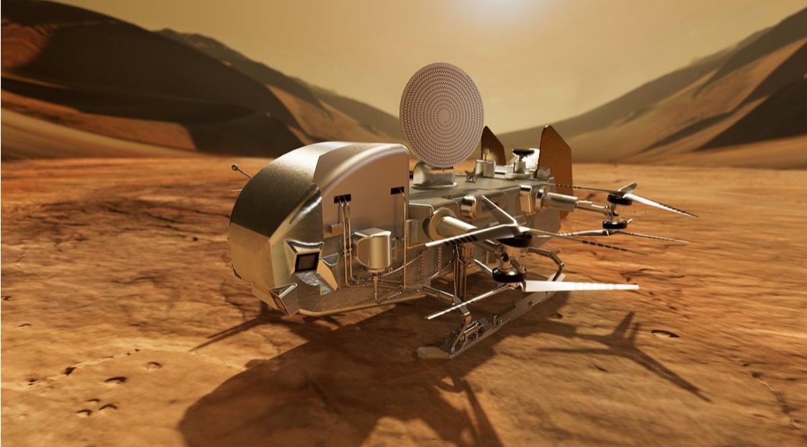
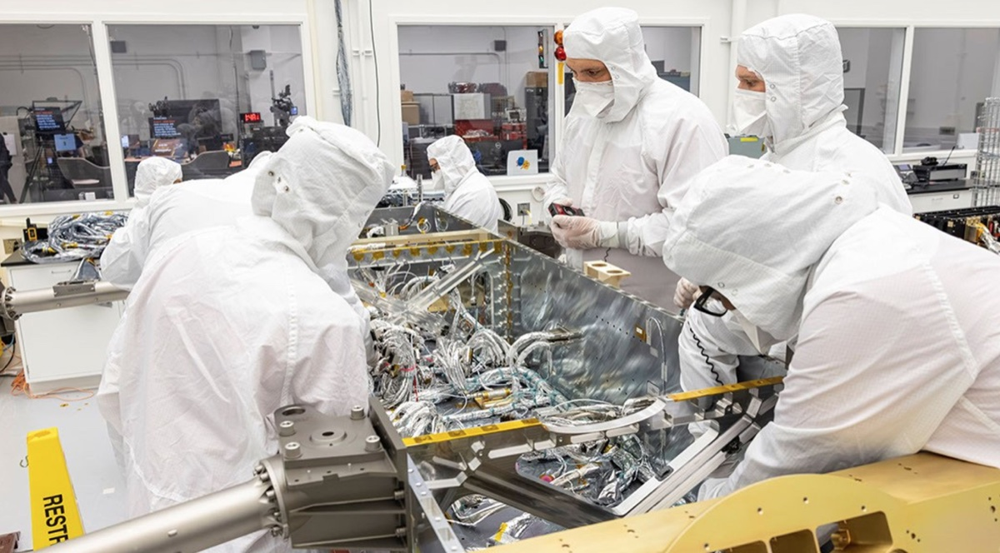
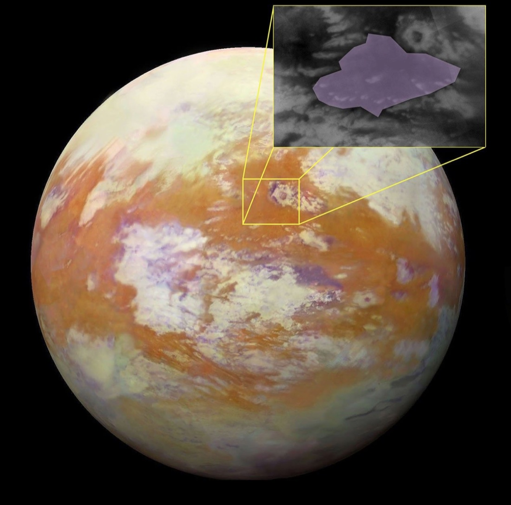

September 2026 · Dragonfly
Dragonfly gets its nervous system

Three things happened to Dragonfly this year that are worth putting together: the spacecraft got its wiring, its landing area got a name, and the launch date held. None of them is glamorous on its own. Taken together they are the point in a programme where a concept turns into a specific machine going to a specific place on a specific date.
What Dragonfly is
It is a rotorcraft that will fly on Saturn's largest moon — eight rotors in four counter-rotating coaxial pairs, about 1.35 m across each, powered by a radioisotope generator that trickle-charges a battery between flights. Every previous surface mission to another world has either stayed where it landed or driven. Dragonfly will fly, making a sortie of several miles every one or two Titan days, each of which lasts about sixteen Earth days.
The reason to go is chemistry. Titan has a thick nitrogen atmosphere, liquid hydrocarbons on the surface, and a history of water and organic material having been in contact with each other. It is the closest thing available to a laboratory running prebiotic chemistry at planetary scale over geological time — the chemistry that came before biology, still in progress, without the inconvenience of life having already consumed the evidence. Dragonfly's job is to sample it in several geologically different places, which is precisely why the ability to relocate matters more here than the ability to drill deep in one spot.
Why flying there is the easy part
Titan is, aerodynamically, the most forgiving place in the solar system to fly. Its atmosphere is roughly four times denser than Earth's at the surface, and its gravity is about one seventh of Earth's. Rotor thrust scales with the density of what the blades are pushing, and the weight you have to hold up scales with gravity, so both terms move in your favour at once. The result is that hovering a given mass on Titan takes a small fraction of the power the same vehicle would need here — the kind of margin that makes an 800-kilogram nuclear-powered octocopter a reasonable proposal rather than a fantasy.
This is the exact inverse of Mars, where Ingenuity had to fly in about one percent of Earth's atmospheric density and needed enormous rotors spinning very fast to produce almost no margin at all. Same idea, opposite difficulty.
The harness

The headline milestone, completed in July, is the electrical harness — the bundles of wire carrying power and data between the computers, actuators, sensors, instruments and battery. It comes to roughly 17,300 feet of silver-coated copper across 374 connectors, weighing about 100 pounds, with 4- and 8-gauge wire where the power demands are highest.
That mass is not incidental. A hundred pounds of copper on a vehicle whose whole premise is flying is a real design cost, and it has to survive Titan's surface temperature, which is cold enough that the electronics live inside what is essentially a thermos: an insulated shell with warm air circulated through it. The harness lead at APL, Jackie Perry, made the point that the harness does nothing by itself but is necessary "for everything else to function." That is the honest description of a subsystem that gets no press until it fails.
A name for the landing site

The landing area is now formally Ahmakiq Undae, a dune field about 810 km across. Under the naming conventions used for Titan, dune fields take the names of wind deities; Ahmakiq comes from Mayan tradition, a spirit invoked to protect crops from strong winds — roughly, the one who locks up the wind. For a vehicle whose principal operational hazard is wind during takeoff and landing, it is a better-chosen name than most.
The site matters scientifically because of what is next door. Dragonfly will work its way through the dunes and the flat interdune areas toward Selk Crater, an impact site where liquid water and organic material are thought to have coexisted — the specific circumstance the mission exists to sample. The dunes are the approach; the crater is the destination.
The schedule
Launch is set for the summer of 2028, arrival at Titan for late 2034, and the primary mission runs 3.3 years after that. Those gaps are worth sitting with. The harness being installed now is wire that will not carry a command on Titan's surface for eight years, built by people who will wait a decade to find out whether they got it right. Very little engineering is done on that timescale.
Where this meets my own work
Dragonfly is not a distant curiosity for me. It appears in the first sentence of my neural MPC work on ground effect, via Asiatico and Kinzel's A Numerical Study of In-Ground Effect Aerodynamics and Sediment Entrainment for the Dragonfly Lander, presented at AIAA SciTech this year.
The connection is direct. When a rotorcraft descends close to a surface, the ground obstructs its own wake, the induced velocity changes, and the thrust actually delivered stops matching the thrust commanded — in the last half-metre of a descent, by more than ten percent for small multirotors. That is the regime my work targets: learning how the delivered thrust scales near a surface so a controller can anticipate the change rather than discover it on the way down.
On Titan the same physics comes with an additional consequence. The Asiatico and Kinzel study pairs in-ground-effect aerodynamics with sediment entrainment — what the rotor wash picks up off the ground. Dragonfly is going to spend its mission landing in a dune field, repeatedly, which means every arrival disturbs the loose material it is there to study, and does so in an atmosphere dense enough to move it readily. The aerodynamics of the final few metres are not just a control problem there. They are a contamination problem and a visibility problem too.
Which is the recurring theme in most of what I work on: the interesting part of flight is the few seconds nearest the ground.
Dragonfly is designed, built and operated by the Johns Hopkins Applied Physics Laboratory for NASA, as part of the New Frontiers programme.